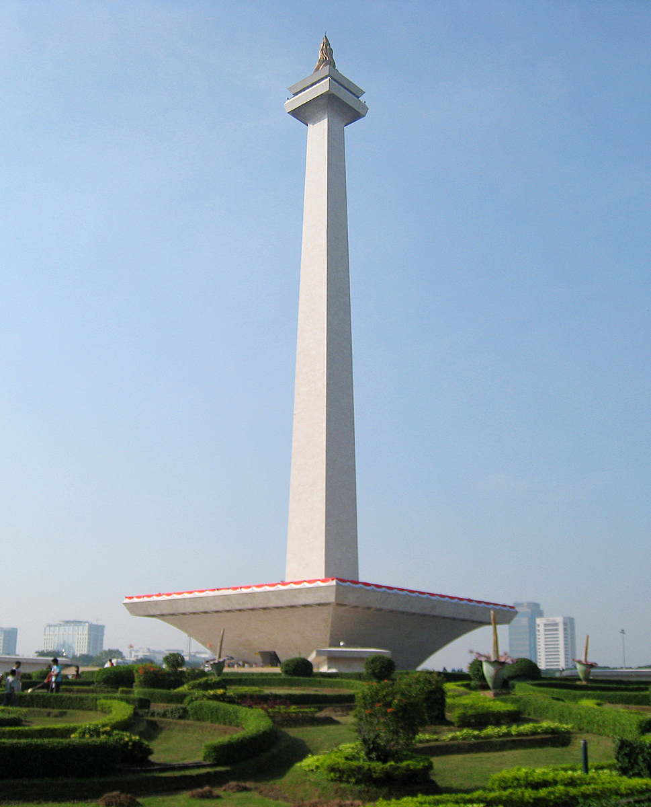

Ibu Kota Indonesia Berada di kota jakarta, Monumen Nasional Yaitu Monas di Jakarta, Gor popki adalah Gor yang Suka di pakai untuk Pertandingan Berbagai olahraga
 Jakarta (/dʒəˈkɑːrtə/; Indonesian pronunciation: [dʒaˈkarta] (About this soundlisten)), officially the Special Capital Region of Jakarta (Indonesian: Daerah Khusus Ibukota Jakarta), is the capital and largest city of Indonesia. On the northwest coast of the world's most-populous island of Java, it is the centre of economy, culture and politics of Indonesia with a population of 10,770,487 in the city as of 2020.[5] Although Jakarta only covers 699.5 square kilometres (270.1 sq mi), the smallest among any Indonesian provinces, its metropolitan area covers 6,392 square kilometres (2,468 sq mi), and is the world's second-most populous urban area after Tokyo, with a population of about 35.934 million as of 2020.[6] Jakarta's business opportunities, as well as its potential to offer a higher standard of living, have attracted migrants from across the Indonesian archipelago, making it a melting pot of numerous cultures.[7] Jakarta is nicknamed the "Big Durian", the thorny strongly-odored fruit native to the region,[8] seen as the Indonesian equivalent of Big Apple (New York)
Secara konstitusional, Jakarta ditetapkan sebagai ibu kota Indonesia melalui Undang-Undang Nomor 10 Tahun 1964. Jakarta telah menjadi pusat pemerintahan sejak masih bernama Batavia pada masa Hindia Belanda. Pada awal abad ke-20 ada upaya oleh Pemerintahan Hindia Belanda untuk mengubah lokasi ibu kota dari Batavia ke Bandung, walaupun gagal karena Depresi Besar dan Perang Dunia II.[1] Setelah menjadi wacana selama puluhan tahun, Presiden Joko Widodo mengumumkan pemindahan ibu kota negara ke Kalimantan Timur pada tahun 2019.
Pada awal tahun 1947 situasi keamanan di ibu kota Republik Indonesia di Jakarta sangat tidak aman. Pasukan Sekutu (AFNEI, Allied Forces in Netherlands East Indies), yang diboncengi Belanda dengan nama NICA (Netherlands Indies Civil Administration) mulai melakukan razia-razia dan penangkapan atas pejuang kemerdekaan Indonesia. Beberapa kali terjadi kontak senjata antara pejuang dengan pasukan Sekutu, terutama di daerah perbatasan kota, seperti Meester Cornelis (Jatinegara dan Bekasi), Pasar Minggu dan lain-lain. Penjarahan dan perampokan terjadi dimana-mana. Pasukan Jepang pun masih belum ditarik sepenuhnya, justru diminta mendukung operasi pengamanan ibu kota tersebut. Belum lagi muncul beberapa konflik antar pemimpin perjuangan. Bahkan terjadi beberapa kali upaya penculikan dan pembunuhan atas Presiden Soekarno dan pejabat tinggi pemerintah RI lainnya, baik oleh pasukan NICA maupun laskar-laskar rakyat yang tidak sepenuhnya tunduk kepada pemerintahan baru. Pada 2 Januari 1946, Sri Sultan Hamengku Buwono IX dan Sri Pakualam VIII mengirimkan surat melalui kurir yang mempersilakan apabila pemerintah RI bersedia memindahkan ibu kota RI ke Yogyakarta atas jaminan mereka berdua. Tawaran ini pun segera disambut baik oleh Bung Karno dan kawan-kawan yang segera membahas persiapannya keesokan harinya dalam sidang kabinet tertutup
Operasi Rahasia Pemindahan Ibu kota dengan Kereta Api Mengingat seluruh penjuru kota telah diawasi ketat oleh pasukan NICA dan Sekutu, maka dipikirkanlah cara paling aman untuk melakukan proses evakuasi tersebut. Akhirnya dipilihlah transportasi Kereta Api, mengingat jalur-jalur keretalah yang masih dianggap relatif aman. Jalur yang dilalui: Pegangsaan Timur - Manggarai - Jatinegara - Bekasi - Cikampek - Cirebon - Purwokerto - Kroya - Kutoarjo - Yogyakarta. "Kita akan memindahkan ibu kota besok malam. Tidak ada seorang pun dari saudara boleh membawa harta benda. Aku juga tidak," kata Soekarno seperti ditulis Cindy Adams dalam biografi Bung Karno, Penyambung Lidah Rakyat Indonesia[3]. Maka disusun satu rencana nekat. Pada tanggal 3 Januari 1946 jelang tengah malam, sebuah gerbong kereta yang ditarik dengan lokomotif uap C.2809 buatan Henschel (Jerman) dan dimatikan lampunya berhenti di belakang rumah Soekarno di Jalan Pegangsaan Timur 56 (Menteng) yang terletak di pinggir rel KA antara Stasiun Manggarai dan Gambir. Diharapkan, tentara Sekutu/NICA akan menyangka kereta tersebut hanyalah kereta biasa yang langsir menuju stasiun Manggarai. "Dengan diam-diam, tanpa bernapas sedikit pun, kami menyusup ke gerbong. Orang-orang NICA menyangka gerbong itu kosong," kata Soekarno menggambarkan ketegangan saat itu. "Seandainya kami ketahuan, seluruh negara dapat dihancurkan dengan satu granat. Dan kami sesungguhnya tidak berhenti berpikir apakah pekerjaan itu akan berlangsung dengan aman. Sudah tentu tidak. Tetapi republik dilahirkan dengan risiko. Setiap gerakan revolusioner menghendaki keberanian." Maka tanggal 4 Januari 1946 dini hari, kereta api tersebut membawa Bung Karno dan rombongan ke Yogyakarta di malam buta. Semua penumpang diliputi ketegangan. Rombongan tersebut pada akhirnya berhasil mencapai kota Yogyakarta dengan selamat. Pengelolaan dan pengendalian keamanan kota Jakarta selanjutnya diserahkan kepada Panglima Divisi Siliwangi, Letnan Kolonel Daan Jahja, yang merangkap sebagai Gubernur Militer Kota Jakarta